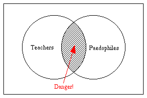

|
|
| Home | About | Topics | Rejects | Abortions |
This is an archive site only. It is no longer maintained.
You can not post comments. You can not make an account. Your email
will not be read. Please read this
page if you have questions.
|
||||||||||
|
||||||||||
This is an archive site only. It is no longer maintained.
You can not post comments. You can not make an account. Your email
will not be read. Please read this
page if you have questions. |
||||||||||
|
|
Hardly a week passes without another shocking news report about child
abuse in our schools. Yet these terrible reports are only the tip of the
iceberg. For every case of sexual abuse that reaches the media spotlight,
countless others go unnoticed.
The unfortunate reality is that paedophilia is prevalent in schools and that society chooses to ignore the scale of the problem for fear of implicating itself. Now is the time to make a stand for what is right. Adequacy.org finally breaks the taboo surrounding institutionalised paedophilia in the educational system and exposes the terrible truth. |
|||
|
Almost everyone who has attended school has a tale to tell about a teacher
who looked at them in a strange way, or who touched them in a way that
made them feel uncomfortable. For the unfortunate few, their experiences
at the hands of teachers are far too painful and horrific to put into
words.
The widespread problem of paedophilia and child abuse in our schools is one that society refuses to accept. In most cases, the victims of these crimes are too frightened to speak out against their attackers. Should one of these poor children be brave enough to report the crimes committed against them, the truth is covered up by school authorities who do not wish to expose themselves to a damaging lawsuit. In both cases, the perpetrators are allowed to walk free and continue their reign of terror. In the few cases where one of these sick perverts is brought to justice, the problem is played down by governments who do not wish to cause alarm the electorate or to offend the powerful teachers' trade unions. There is a chain of guilt and no-one is willing to recognise or tackle the problem. Although society attempts to portray cases of child abuse in schools as infrequent isolated incidents, the teaching profession is rotten to the core. To understand why paedophilia is endemic in schools, we must examine the motivations of individuals entering the teaching profession. There are few desirable aspects of a career in teaching - teachers are poorly paid and have a low social status. In many cases, the old adage "those who can, do; those who can't, teach" is true. The majority of teachers are well-adjusted citizens who simply don't have the qualifications or ability to succeed in proper careers. However, the motives of the remaining few must surely be questioned. It is clearly not natural for people to wish to spend time in the company of the children of others. While it is perfectly normal to be around one's own offspring, the motives of anyone who wishes to work with children are questionable. Children simply do not have a sufficient level of emotional or intellectual development to be engaging company for an adult of average intelligence. Therefore, anyone who chooses to work in schools must obviously have unhealthy carnal desires for children. The argument that teachers enjoy their work because it satisfies their nurturing instincts is clearly fallacious. Since there is no evolutionary imperative to nurture the children of others, anyone who claims to have these instincts is almost certainly a liar and a repressed child abuser. It has been ascertained that paedophiles are attracted to the teaching profession like flies to faeces. Numerous aspects of the educational system demonstrate how institutionalised this paedophilia has become. For example, school dress codes satisfy the unwholesome urges of uniform fetishists, while corporal punishment (now thankfully abolished in most schools) merely serves the interests of those with sadistic perversions. By now, it should be apparent that we must not continue blindly placing our children into the "care" of these deviants. The time for decisive action is now upon us. To protect children from this menace, it is necessary for governments to recognise that there is an epidemic of paedophiles in our schools and to legislate accordingly. The British Government has already taken the first step to solving this problem. It is now a legal requirement to ensure that all applicants to teaching jobs in the United Kingdom are not on the government's list of registered sex offenders. However, this legislation is still insufficient to eradicate the threat to our children. Annual psychological evaluation of teachers, to check for any paedophilic tendencies may be a possible solution to the problem. Additionally, a telephone hotline that teachers may use to anonymously report colleagues who they suspect of abusing pupils may also help to protect our children. These proposals are likely to attract opposition from teachers. However, the concerns of teachers are unimportant in comparison to preserving the innocence of our children. Frankly, any teachers who would oppose these measures must surely be trying to hide their own unnatural desire for children.
How many more young lives must be ruined before society recognises the
threat to children and takes action to clean up our schools? |